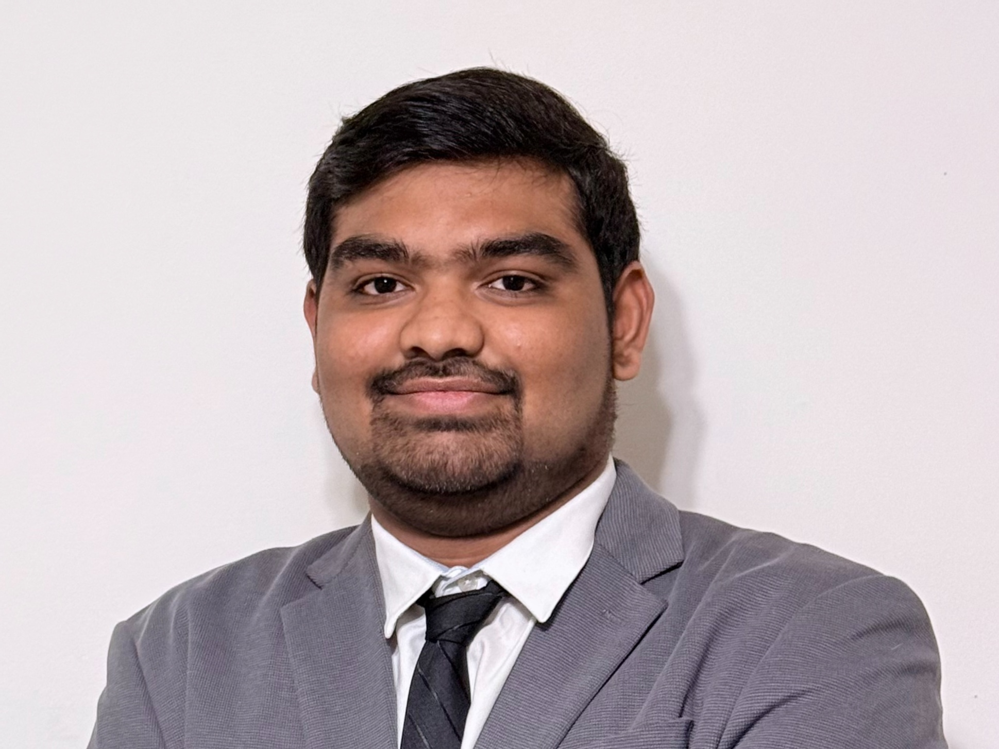

|
I'm fortunate to work with a group of highly talented & motivated students and researchers. Ph.D. Students |

Undergraduate Students |
Aditya BasarkarResearch Interest: Driving AI-Powered Complex Mathematical ReasoningB.S.: North Carolina State University (Dean’s List, GPA: 3.974), USA Majors: B.S. in Computer Science, B.S. in Statistics Personal Web [link] |
|
Noah (Precious) DonkorResearch Interest: Unveiling and Mitigating Implicit Bias in Generative AI ModelsB.S.: North Carolina State University (GPA: 3.9), USA Achievements: i) Federal Work-Study Award, ii) NC State COE REU Award Publication: AAAI 2025 Undergraduate Consortium Personal Web [link] |
Master Students |
Harsh Mauny (co-advised with Dr. Joey Huang)Research Interest: Co-Designing AI and Human Collaboration for Artistic CreationB.S.: Sardar Vallabhbhai Patel Institute of Technology, India Personal Web [link] |
|
|  |
Deepak Sai Pendyala (co-advised with Dr. Yaroslava G. Yingling)Research Interest: Advancing Trustworthy and Explainable Agentic AI for Materials ScienceB.S.: Sardar Vallabhbhai Patel Institute of Technology, India Personal Web [link] |
Shreyas Visweshwaran (co-advised with Dr. Tiffany Barnes)Research Interest: Developing Trustworthy AI Agents for Personalized LearningB.S.: Amrita Vishwa Vidyapeetham, India Personal Web [link] |
Alumni
|
|
*Last updated on 08/19/2025* |